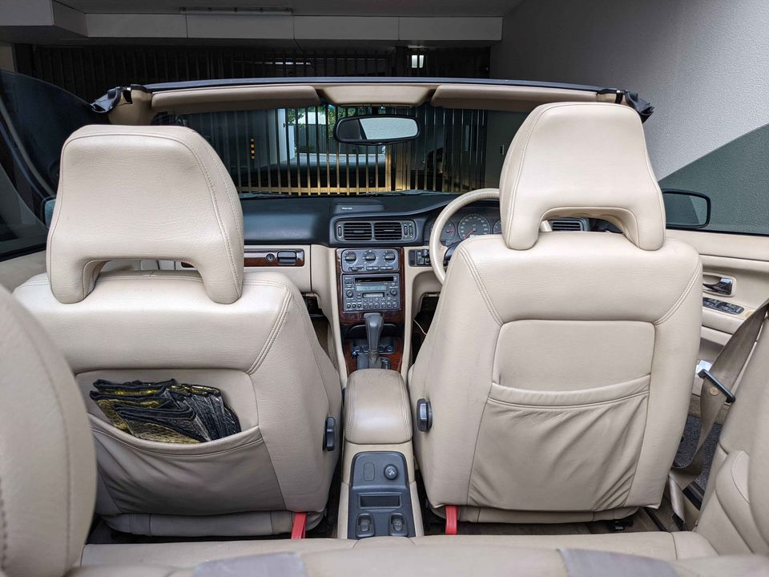

Wreckeroo “Car Removal Volvo” removes used, scrap and damaged Volvo automobiles in Perth. We remove Volvo cars, trucks, buses, vans, UTEs and 4WDs for free. Old car removal service at “Car Removal Volvo” is 100% free. We pick up undrivable Volvo vehicles from any corner of Perth and remove them on same day. For us, not a single automobile is worthless. We buy every condition vehicle. There are no hidden “car removal” charges at our company; unlike other companies. Hence, Car Removal Volvo removes junk and old cars for free and offers good cash in return to clients.
Our commercial car removal service Sydney operates in a corporate and do not operate 24 hours. We operate only when there is demand for our services. Hence, you will not be able to book car removal services before 6:00 PM. If you want a completely safe and smooth removal, then book our company now. If you want us to remove your car for free, then make a call to us on 1800-872-8900, and we will confirm your details on same day. Do not book our services until we confirm your details. After booking Car Removal Volvo, our team will pick up your vehicle from your place. We take the car from your home or place of work and remove it from the street. In the end, you will not be charged for the removal at all.

Our Wreckeroo truck, lorry and truck company is a network of independent wrecker operators in Perth. We have the largest fleet of used and wrecker trucks in the Perth area. Wreckeroo is a leading car removal company in Perth. We have many years of experience in removing old, scrap and damaged vehicles. This makes us the best used car removal company in Perth. Our 24 hours daily road service removes unwanted, wrecked and scrap cars from roads and roadsides. We remove cars for free, under a specified time limit. We do not charge any exit fee. We take scrap cars from residential areas. These cars are then sold to scrap metal dealers. A Car Removal Volvo is free from fines. We also provide accident and injury insurance.
We offer free removal services to all Volvo owners. For quick removal of your Volvo, we offer next day removal. You can collect your Volvo car at our parking place on the same day and we will give you 50% cash in return. Other companies charge Rs 25,000 for removal of all Volvo vehicles and offer only 35% cash in return. How To Remove Volvo Car From Australia? Wreckeroo “Car Removal Volvo” offers 100% free of charge to get rid of old Volvo cars. We pay the lowest rates and offer good cash in return. We buy every condition Volvo car at a minimum price of $ 2,200. Thus, we recover the cost of purchase of used cars very quickly and offer good cash in return. Alternatively, you can buy used Volvo car from scrapyard. You have to register your Volvo vehicle for scrap yard.
At Wreckeroo “Car Removal Volvo” we offer free delivery, removal and storage charges. All you need to do is call us or visit our office for car removal service. All vehicles are removed within 24 hours after they are transported. Free Car Removal Melbourne: How to remove your Volvo Car from interstate Don’t waste your valuable time and money. We remove scraped, damaged and old vehicles for free at Wreckeroo “Car Removal Volvo”. Our company has already cleared used, scraped, damaged and old vehicles in Sydney, Melbourne, Perth, Adelaide and Brisbane. Moreover, we have got used cars being dumped in Goulburn and Wagga Wagga. Our team removed more than 200 used vehicles for free at Goulburn last year. Don’t miss this wonderful opportunity and don’t wait for last minute! Call now!
We pick up old and wrecked Volvo cars from all the areas of Perth. We also work for the companies to clean, dismantle and dispose the old and used Volvo cars. All the damaged cars are picked up at no additional charges. We buy the cars from the scrap yard at a suitable price. We offer excellent cash in return. If you want a Volvo car owner from our company, please call us now at 1300 555 051. Volvo Car Removal Perth: Got Your Own Car? Here Are The Options! Did you know that buying and selling your own car is easy, affordable and is usually done within a day? Now, you don’t have to think twice to sell your old Volvo cars at discounted rates. We are the cheapest Volvo car removal Melbourne service provider in Perth. We sell damaged, wrecked and scrap old cars for next to nothing.
In the past, our company received multiple calls from clients with their Volvo cars. They had doubts about buying new cars because they had read a local newspaper article. In that article, a Volvo car was damaged during removal and they were left without any alternatives. On the other hand, there was a Volvo car in their vicinity that was in similar condition but they did not call us in time. Hence, we offer them the same low price that we offer new Volvo cars. That’s why we accept no advertisements and no referral fees from other people. Wreckeroo Car Removal Perth understands the importance of quick removal of the Volvo automobile. All our Volvo cars are removed from clients in 48 hours. Did we ever say that if the Volvo automobile has damages, it is not worth removing?
Do you want to get rid of old and damaged cars and get some good cash in return? Do you have a scrap Volvo vehicle and don’t know how to remove it? Car Removal Volvo gives you good cash in return. Therefore, Car Removal Volvo is the best option for you.
Address:103 Sheffield Rd, Welshpool WA 6106
Phone: (08) 9358 1392